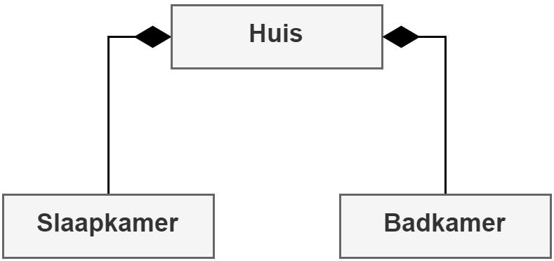
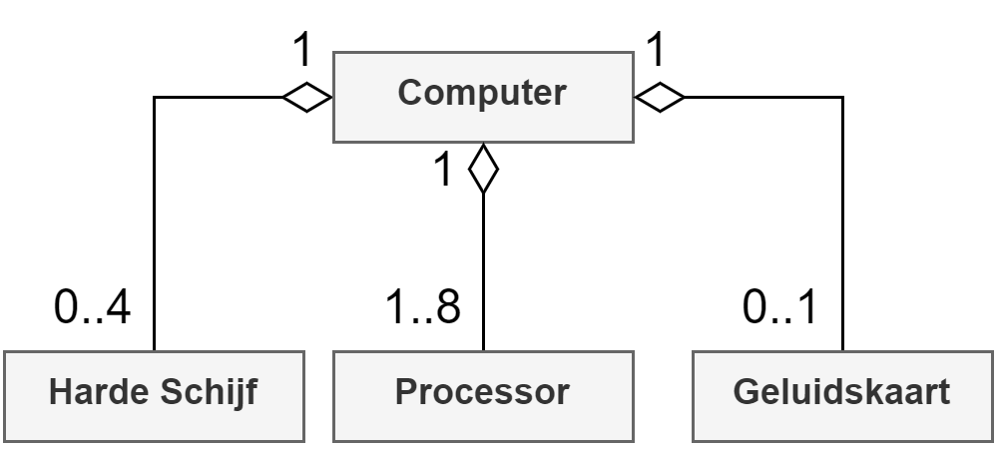
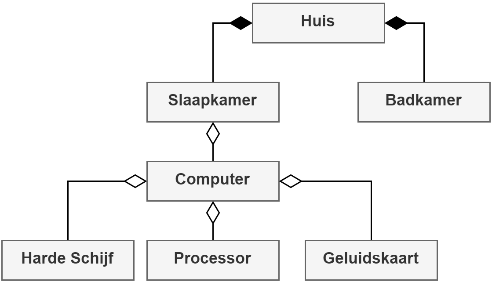
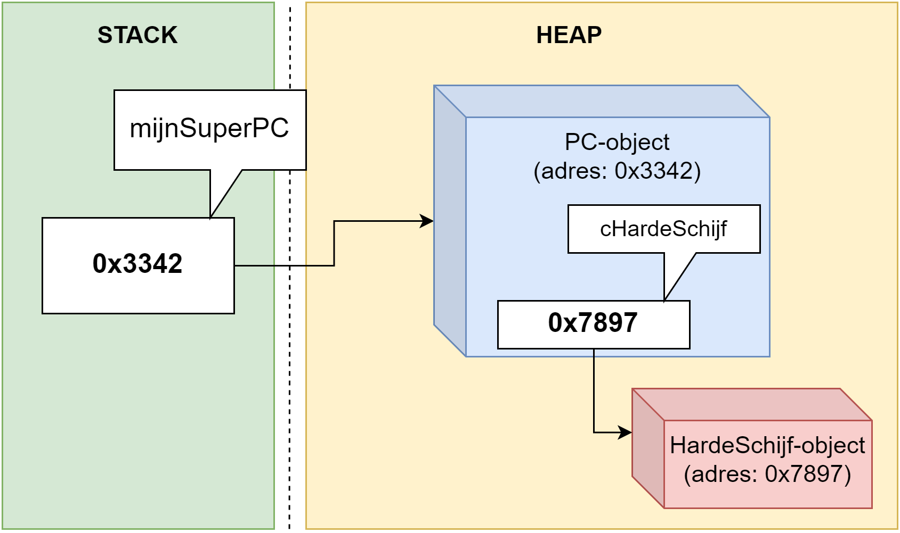

89 Associaties
Dit hoofdstuk is kort maar krachtig. Ik ga eigenlijk niets nieuws uitleggen. Ik ga zaken benoemen die je waarschijnlijk al toepaste, zonder te weten dat er daar ook een naam voor was.
We spreken over compositie (compositie) en aggregatie (aggregation) wanneer we een object in een ander object gebruiken. Beide termen zijn zogenaamde associaties. Ze beschrijven de relatie tussen 2 objecten. Denk bijvoorbeeld aan een object van het type Motor dat je gebruikt in een object van het type Auto. Afhankelijk of het interne object kan bestaan zonder het omliggende object bepaalt of het gaat om aggregatie of compositie:
- Compositie: Het interne object heeft geen bestaansreden zonder het omliggende object. Denk bijvoorbeeld aan een kamer in een huis. Als het huis verdwijnt, verdwijnt ook de kamer.
- Aggregatie: Beide objecten kunnen onafhankelijk van elkaar bestaan. Denk hierbij aan de motor in een auto. Wanneer de auto vernietigd wordt kan de motor gered worden en elders gebruikt worden. Een ander voorbeeld zijn de harde schijven in een computer.
Het lijdende voorwerp zal steeds het object zijn dat binnen het onderwerp zal geplaatst worden (motor in auto, schijf in computer).
89.1 Heeft een-relatie
Overerving konden we detecteren door de “is een”-relatie. Een associatie daarentegen detecteren we met behulp van de “heeft een”-relatie tussen 2 klassen. Een mango heeft een pit. Een vliegtuig heeft een cockpit. enz.
Je hoort ook ogenblikkelijk of het om een “heeft één” of “heeft meerdere”-relatie gaat. In het tweede geval (heeft meerdere) wil dit zeggen dat het omliggende object een array van het interne object in zich heeft. Wederom het voorbeeld van het boek: een boek heeft meerdere pagina’s. Dus in de klasse Boek zullen we een object van het type Pagina[] of List<Pagina> tegenkomen.
Een klassieke fout is overerving gebruiken wanneer je bijvoorbeeld de relatie tussen een boek en z’n pagina’s wilt aanduiden. Een boek is géén pagina, ook niet omgekeerd. Er is dus geen sprake van overerving. Een boek HEEFT een pagina (of meerdere). Er is dus sprake van een associatie, namelijk aggregatie (je kan pagina’s uit een boek scheuren en deze nog steeds doorgeven aan iemand anders).
89.1.1 Associaties beschrijven
Compositie duiden we aan met een lijn die begint met een volle ruit aan de kant van de klasse die de objecten in zich heeft:

Aggregatie duiden we op exact dezelfde manier aan, maar de ruiten zijn niet gevuld. Optioneel duidt een getal aan iedere kant van de lijn de verhouding aan (zowel bij aggregatie als compositie), zodat we kunnen aangeven hoeveel (of geen) objecten het omliggende object kan hebben:

Uiteraard zijn ook combinaties mogelijk. Stel je voor dat je een applicatie moet ontwerpen waarin je een reeks huizen moet bouwen, waarbij er in de slaapkamer steeds een computer moet gezet worden:

Herinner je: overerving duiden we aan met een pijl die wijst naar de parent-klasse en duidt een “is een”-relatie aan.
89.1.2 Associatie in de praktijk
Het verschil tussen aggregatie en compositie is vooral van filosofische aard. In de praktijk zijn er weinig verschillen.
Eens kijken naar het voorbeeld van de computer en de harde schijf. We hebben twee klassen:
internal class PC
{
}
internal class HardeSchijf
{
}Een PC heeft een HardeSchijf, dit wil zeggen dat we in de klasse PC een object (instantievariabele) van het type HardeSchijf zullen definiëren:
internal class PC
{
private HardeSchijf cHardeSchijf;
}In principe kunnen we nu zeggen dat we aggregatie hebben toegepast. Uiteraard moeten we nu deze HardeSchijf nog instantiëren anders zal deze de hele levensduur van ieder PC-object null zijn.
De instantie van een geaggregeerd object kan op verschillende manieren aangemaakt worden en is afhankelijk van wat je nodig hebt in je applicatie.
Associatie is net zoals overerving een belangrijk onderdeel van het OOP paradigma. Er is geen exacte oplossingsstrategie om associatie toe te passen: deze zal afhankelijk zijn van je specifieke probleem en oplossing. Staar je dus niet blind op deze voorbeelden: het is maar een greep uit de vele manieren waarmee je associateis kunt gebruiken.
89.1.2.1 Manier 1: Rechtstreeks de instantievariabele instellen
Wanneer we wensen dat iedere nieuwe PC ogenblikkelijk een interne harde schijf heeft dan kunnen we dit doen door ogenblikkelijk de instantievariabele een object te geven:
internal class PC
{
private HardeSchijf cHardeSchijf = new HardeSchijf();
}89.1.2.2 Manier 2: Via de constructor(s)
Willen we echter bij het aanmaken van een nieuwe pc ook iets meer controle over wat voor harde schijf er wordt geïnstalleerd, dan kan dit ook via de constructors. We zouden dan bijvoorbeeld afhankelijk van bepaalde parameters in de (overloaded) constructors de schijf andere eigenschappen kunnen geven:
internal class PC
{
private HardeSchijf cHardeSchijf;
public PC(bool preinstallHD)
{
//enkel interne harde schijf indien klant voorinstallatie wenst
if(preinstallHD)
cHardeSchijf = new HardeSchijf();
else
cHardeSchijf == null;
}
}De lijn
cHardeSchijf == nullis niet noodzakelijk, daarcHardeSchijfsowiesonullzal zijn indien we niet in deifgaan.Ik raad je toch aan dit altijd expliciet te doen. Hiermee zeg je nadrukkelijk: “als we via de overloaded constructor een PC aanmaken en er is geen preinstallatie vereist dan zit er geen harde schijf in de pc”. Het kan namelijk gebeuren dat voor we aan deze code komen er ondertussen iets voor heeft gezorgd dat
cHardeSchijfalsnog een objectreferentie bevat. Door deze nu expliciet opnullte zetten verwijderen we zeker de harde schijf als die er toch nog had ingezeten.Heb je gezien hoe ik praat over deze preinstallatie alsof het om iets gaat dat in het echte leven gebeurt? Dit is bewust: het OOP paradigma draait om het feit dat het ons toelaat de realiteit zo dicht mogelijk te benaderen. Het helpt dan ook om je code (en probleemanalyse) steeds vanuit de context van de “echte wereld” te benaderen. Bijna ieder concept uit de echte wereld heeft een equivalent binnen C# als OOP-taal.
Het is een goede OOP oefening om af en toe in je omgeving eens rond te kijken, en wat je ziet vervolgens te vertalen naar een structuur van klassen, objecten en verbanden tussen die dingen (overerving, compositie, arrays en later ook nog polymorfisme en interfaces).
89.1.2.3 Manier 3: Properties
De vorige 2 voorbeelden waren eigenlijk voorbeelden van compositie. Wanneer de PC-objecten vernietigd worden (door de garbage collector) zullen ook de interne harde schijven verdwijnen.
Willen we echter via aggregatie de pc’s bouwen, dan is het logischer dat we op een externe plaats de HardeSchijf objecten aanmaken. Nadat de PC werd aangemaakt zullen we de de schrijf in de PC plaatsen. We gebruiken hierbij properties om toegang tot de interne (geaggregeerde) variabele te verschaffen:
internal class PC
{
public HardeSchijf CHardeSchijf {get;set;}
}Vervolgens kunnen we nu van buiten het object benaderen en er, als het ware, een nieuwe harde schijf in steken:
HardeSchijf mijnHardeSchijf = new HardeSchijf()
PC mijnPC = new PC();
mijnPC.CHardeSchijf = mijnHardeSchijf ;Op deze manier hebben we nog steeds een referentie naar mijnHardeSchijf en zal de GC dit object dus niet verwijderen wanneer mijnPC wordt opgekuist.
Kortom, nog steeds niets nieuws onder de zon. Alle manieren die ja al kende om met bestaande types objecten aan te maken gelden nog steeds. Compositie deed je al de hele tijd wanneer je bijvoorbeeld zei “een student heeft een geboortejaar” en dan een instantievariabele int geboortejaar aanmaakte. Het grote verschil is echter dat objecten moeten geïnstantieerd worden, wat niet moest met value-types en je dus iets vaker op null zal moeten controleren.
89.1.3 Associatie objecten gebruiken
Stel je voor dat de klasse HardeSchijf ook een auto-property MaxCapacity heeft. De klasse PC kan dankzij compositie dus nu ook die property gebruiken, zoals volgende voorbeeld toont:
internal class PC
{
private HardeSchijf cHardeSchijf = new HardeSchijf();
public override string ToString()
{
return $"PC capaciteit HD: {cHardeSchijf.MaxCapacity} Gb";
}
}89.1.4 Associaties en referenties
Het moge duidelijk zijn: compositie/aggregatie en referenties horen samen. Maar hoe ziet dit er allemaal uit in het geheugen? Blij dat je het vraagt!
Wanneer we van voorgaande klasse een object aanmaken als volgt:
PC mijnSuperPC = new PC();Dan zien we volgende “beeld”:

Compositie wil dus niet zeggen dat je in het geheugen grote monolithische objecten gaat hebben die het samengestelde object voorstellen. Neen, we blijven dankzij de kracht van referenties de boel apart houden.
Zoals je ziet is het belangrijk te beseffen dat bij compositie én aggregatie het inner object op zichzelf in de heap ergens zal gezet worden en dus niet in het parent-object komt. Alles dat we dus al wisten in verband met het doorgeven van referenties, de GC, enz. blijft dus nog steeds gelden.
Of zoals het hoofdstuk al begon: eigenlijk niets nieuws onder de zon!
89.1.4.1 NullReferenceException is een klassieke fout
Een veelvoorkomende fout bij compositie en aggregatie van objecten is dat je een intern object aanspreekt dat nooit werd aangemaakt. Je krijgt dan een NullReferenceException.
Het is dus zeker bij compositie en aggregatie een goede gewoonte om zoveel mogelijk te controleren op null telkens je het object gaat gebruiken:
public override string ToString()
{
string result= "Dit is een Intel i9.";
if(cHardeSchijf != null)
result += $"Capaciteit HD: {cHardeSchijf.MaxCapacity} Gb";
else
result += "Er is geen harde schijf aanwezig";
return result:
}En uiteraard kan het ook nooit kwaad om alles in try-catch blokken te zetten, alleen is dat op detail-niveau niet werkbaar: je werkt met objecten en zal dus bijna de hele tijd code hebben waar NullReferenceException een potentieel gevaar is. Het is dus beter om vanaf de start je code zodanig te schrijven (met controles op null) dat er quasi geen uitzonderingen op null kunnen optreden.
89.2 “Heeft meerdere”- relatie
Wanneer een object meerdere objecten van een specifiek type heeft (denk maar aan een boek met pagina’s) dan zullen we een array of een List als associatie-object gebruiken. Een voorbeeld:
internal class Pagina
{
}
internal class Boek
{
public Pagina[] AllePaginas {get;set;} = new Pagina[100];
}Indien je nu een pagina wenst toe te voegen dan moet je ook deze individuele array-elementen nog instantiëren.
internal class Boek
{
public Pagina[] AllePaginas {get;set;} = new Pagina[100];
public void InsertPagina(Pagina paginaIn, int positie)
{
AllePaginas[positie] = paginaIn;
}
}Een voorbeeld waarbij men vervolgens van buiten het object bestaande pagina’s kan toevoegen:
Boek zieScherper = new Boek();
Pagina mijnDerdePagina = new Pagina();
zieScherper.InsertPagina(mijnDerdePagina, 2);Of een voorbeeld met List:
internal class Boek
{
//SLECHT IDEE!
public List<Pagina> AllePaginas {get;set;} = new List<Pagina>();
}Dit heeft als voordeel dat we de Insert methode van de List-klasse kunnen gebruiken en niet zelf nog moeten schrijven:
zieScherper.AllePaginas.Insert(new Pagina(), 5); Dit voorbeeld met List is vanuit OOP-standpunt geen goede oplossing. Het vereist namelijk dat programmeurs die jouw klasse Boek gebruiken, weten dat intern met een List wordt gewerkt.
We willen echter zo goed mogelijk een blackbox creëren, conform het abstractie-principe, die van buiten duidelijk en eenvoudig in gebruik is. Het is daarom beter om alsnog aan je Boek klasse een Insert methode toe te voegen. Dit geeft als extra verbetering dat we daarmee de set van onze lijst van pagina’s private kunnen houden:
internal class Boek
{
public List<Pagina> AllePaginas {get; private set;} = new List<Pagina>();
public void InsertPagina(Pagina paginaIn, int positie)
{
allPaginas.Insert(paginaIn, positie)
}
}Pagina’s voegen we nu als volgt toe:
zieScherper.InsertPagina(new Pagina(), 5); Begrijp je nu waarom het geen goed idee is om een interne lijst gewoonweg via een property naar buiten beschikbaar te maken? Stel je voor dat het essentiëel is dat de AllePaginas lijst NOOIT leeggemaakt wordt. Jij als ontwikkelaar weet dit. Maar andere gebruikers van je klasse misschien niet. Zij kunnen echter zonder problemen Clear() via de property aanroepen, wat dus onverwachte gevolgen kan hebben!
89.3 Associatie of overerving?
Ik vertelde in het begin van dit hoofdstuk dat compositie en aggregatie een “heeft een”-relatie aanduiden, terwijl overerving een “is een”-relatie behelst. In de praktijk zal je véél vaker compositie en aggregatie moeten gebruiken dan overerving. Associatie laat ons toe om 2 (of meer) totaal verschillende soorten zaken met elkaar te laten samenwerken, iets wat met overerving enkel kan indien beide zaken een “is een”-relatie hebben. Dit zien we ook in de echte wereld: de zaken rondom ons zullen vaker een compositie/aggregatie-relatie hebben dan een overervings-relatie.
Zoals je hopelijk beseft kan dus alles een compositieobject zijn in een ander object. Denk maar aan een Dictionary van klanten die je gebruikt in een klasse Winkel. Of wat te denken van de klasse Mens die uit een hele boel organen bestaat. Ieder orgaan is compositie-object in de klasse Mens, zoals 2 Nier-objecten, een Hersenen instantie, 1 Hart instantie enz. Iemand die in jouw Mens-simulator een nieuw hart nodig heeft kan dat dan dankzij manier 3, via een property ingeplant krijgen:
Mens patient = new Mens();
Mens donor = new Mens();
//Donor heeft een tragisch ongeluk en sterft
//Operatie start
patient.Hart = null; //vorig hart wordt "verwijderd"
patient.Hart = donor.Hart;
donor = null //donor wordt begravenLet er wel op dat je niet overal compositie begint toe te passen alsof je de Dokter Frankenstein van C# bent. Hoe meer compositie (of aggregatie) je toepast in een klasse, hoe specifieker die soms wordt, en daardoor mogelijk minder herbruikbaar. Het is om die reden dat we verderop interfaces gaan ontdekken om ervoor te zorgen dat 2 of meerdere klassen minder “op/in elkaar gelijmd” zitten ten gevolge van bijvoorbeeld een nogal hechte compositie.